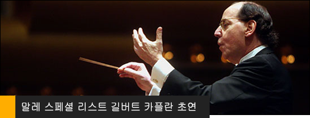
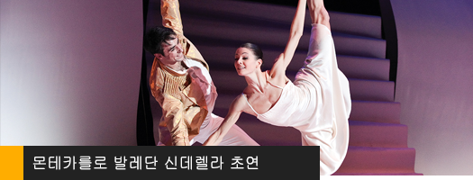
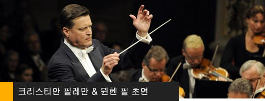

세계 최고의 작품들과 함께한
성남아트센터
지금까지 길버트 카플란의 첫 내한 무대를 비롯해 이반 피셔와 부다페스트페스티벌 오케스트라, 바리톤 마티아스 괴르네의 첫 리사이틀, 몬테카를로 발레단의 [신데렐라][라 벨르], 크리스티안 틸레만과 뮌헨 필하모닉 오케스트라, 세계 4대 뮤지컬인 미스 사이공의 초연 무대 등 공연 예술계가 놀랄만한 기획 프로그램들을 소개해왔고, 첼리스트 장한나의 지휘자 데뷔 무대로 잘 알려진 청소년 관현악 페스티벌을 비롯해, 자체 제작 오페라인 [파우스트] [낙소스 섬의 아리아드네]는 KBS TV가 2005년, 2007년 그 해 최고의 공연으로 선정하는 등 지금까지 시도하지 않았던 기획 무대와 완성도로 큰 호평을 받았다. 여기에 시민들과 함께 하는 문화예술축제 탄천페스티벌과 국제무용축제인 성남국제무용제, 청소년들의 음악 감성교육을 위한 성남국제 청소년관현악페스티벌을 개최하여 지역문화 발전에 크게 기여해 왔다.
- 
- 
- 